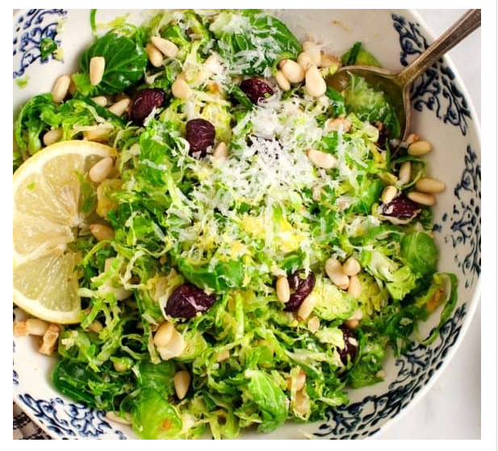

Shredded Brussel Sprout Salad

Recipe Description
It’s a breeze to put together. Simply shave your sprouts (or use pre-shredded Brussels sprouts),
and toss them with olive oil, lemon, dried cranberries, grated cheese, pine nuts, chives, salt & pepper.
You can prep it hours in advance. The hearty Brussels sprouts hold up well even if you dress them ahead of time,
so this recipe is a perfect one to make ahead for holiday parties.
Even though it’s made with so FEW ingredients, it’s so delicious. The bright lemon, chewy, tart cranberries,
and salty cheese are a simple, yet addictive combination. With just a few ingredients, this salad checks all the
flavor boxes.
Ingredients
- 4 cups shaved Brussels sprouts
- ¼ cup extra-virgin olive oil, plus extra for drizzling
- ¼ cup fresh lemon juice
- ½ cup pine nuts, toasted
- ⅓ cup dried cranberries
- ⅓ cup grated pecorino cheese, optional
- ⅓ cup chopped chives
- Sea salt and freshly ground black pepper
Instructions
- Thinly slice the Brussels sprouts using a mandoline if you have one.
Place them into a medium bowl and toss with the olive oil,
lemon juice, pine nuts, cranberries, pecorino cheese, chives,
and pinches of salt and pepper.
- Let the salad sit at room temperature for 15 minutes, then taste
and adjust the seasonings. Finish with an additional drizzle of
olive oil if you like.